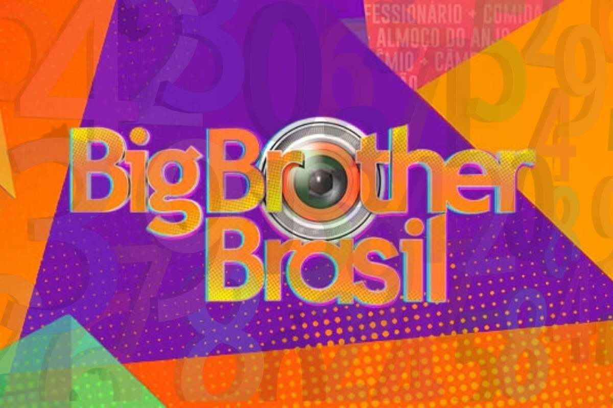

TABELA DE ELIMINADOS E SUSAS PORCENTAGENS!
Até o último programa exibido no dia 15/02/2022 temos um total de quatro eliminados

Luciano
Rodrigo
Naiara
Barbara
49,31%
38,88%
57,77%
87,02%
clique aqui para saber sobre a expulsão da Maria
Programação da semana BBB22